Capítulo 20 Gráficos
20.1 Visualização efetiva de dados
20.1.1 Por que começar pela mensagem antes do gráfico?
- A figura deve responder a uma pergunta clara (comparação? tendência? composição?) e isso orienta a escolha do tipo de gráfico, dados e anotações. Esboce a mensagem e a pergunta antes de abrir o software.237
20.1.2 Como escolher a geometria e “mostrar os dados”?
- Prefira geometrias que revelem distribuição/variabilidade (pontos, boxplots, violinos) em vez de médias sozinhas. Sempre que possível, exiba os dados brutos (pontos com jitter) junto da estatística-resumo.237
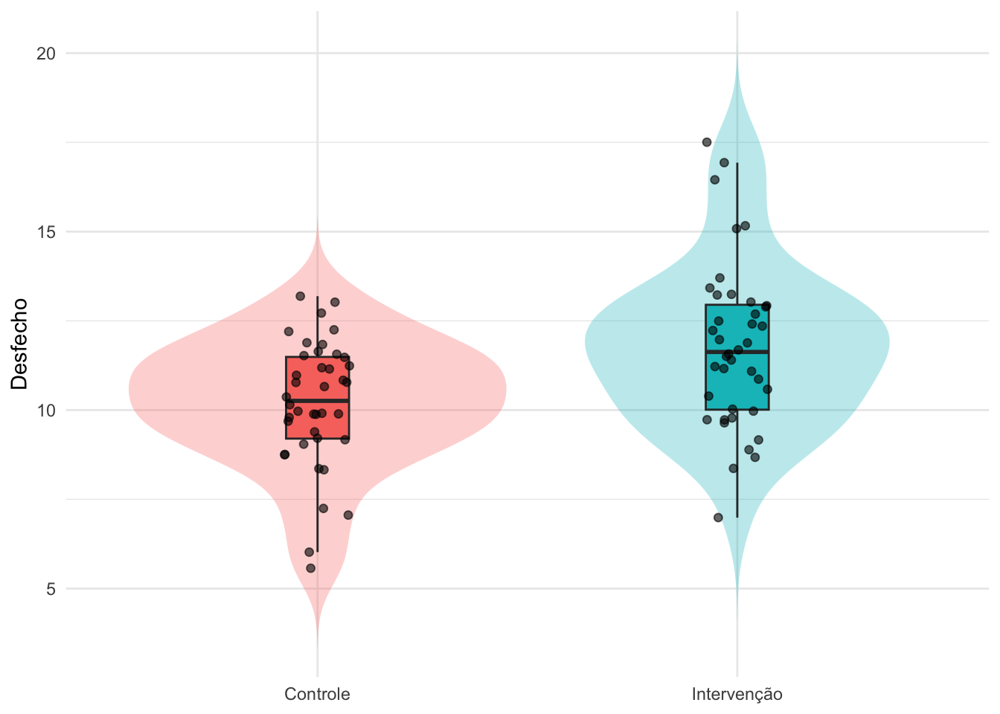
Figura 20.1: Gráfico que mostra os dados brutos junto com um resumo estatístico (média e dispersão).
20.2 Gráficos
20.2.1 O que são gráficos?
- Gráficos são utilizados para apresentar dados (geralmente em grande quantidade) de modo mais intuitivo e fácil de compreender.238
20.2.2 O que torna um bom gráfico tão poderoso?
- “Não há ferramenta estatística tão poderosa quanto um gráfico bem escolhido”: gráficos ajudam a explorar dados, comunicar resultados e suportar decisões de forma clara e rápida.239
20.2.3 Que elementos incluir em gráficos?
- Título, eixos horizontal e vertical com respectivas unidades, escalas em intervalos representativos das variáveis, legenda com símbolos, síntese descritiva dos valores e respectiva margem de erro, conforme necessário para adequada interpretação.238
20.2.4 Para que servem as barras de erro em gráficos?
Barras de erro ajudam ao autor a apresentar as informações que descrevem os dados (por exemplo, em uma análise descritiva) ou sobre as inferências ou conclusões tomadas a partir de dados.208,240
Barras de erro mais longas representam mais imprecisão (maiores erros), enquanto barras mais curtas representam mais precisão na estimativa.240
Barras de erro descritivas geralmente apresentam a amplitude (mínimo-máximo) ou desvio-padrão.240
Barras de erro inferenciais geralmente apresentam o erro-padrão ou intervalo de confiança no nível de significância \(\alpha\) pré-estabelecido.208,240
Barras de erro com desvio-padrão são úteis para descrever a variabilidade dos dados, enquanto as barras de erro com erro padrão da média são úteis para descrever a precisão do parâmetro estimado (média) e sua relação com o tamanho da amostra.208
Barras de erro com intervalo de confiança são úteis para fornecer uma estimativa da incerteza da estimativa do parâmetro populacional.208
O comprimento das barras de erro sugere graficamente a imprecisão dos dados do estudo, uma vez que o valor verdadeiro da população pode estar em qualquer nível do intervalo da barra.240
De modo contraintuitivo, um espaço entre as barras não garante significância, nem a sobreposição a descarta—depende do tipo de barra.208
Para amostras pequenas é preferível apresentar os dados brutos, uma vez que as barras de erro não serão muito informativas.208
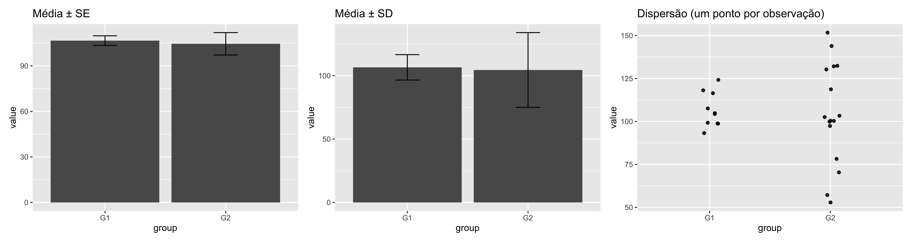
Figura 20.2: Exemplos de gráficos com barras de erro e dados brutos.
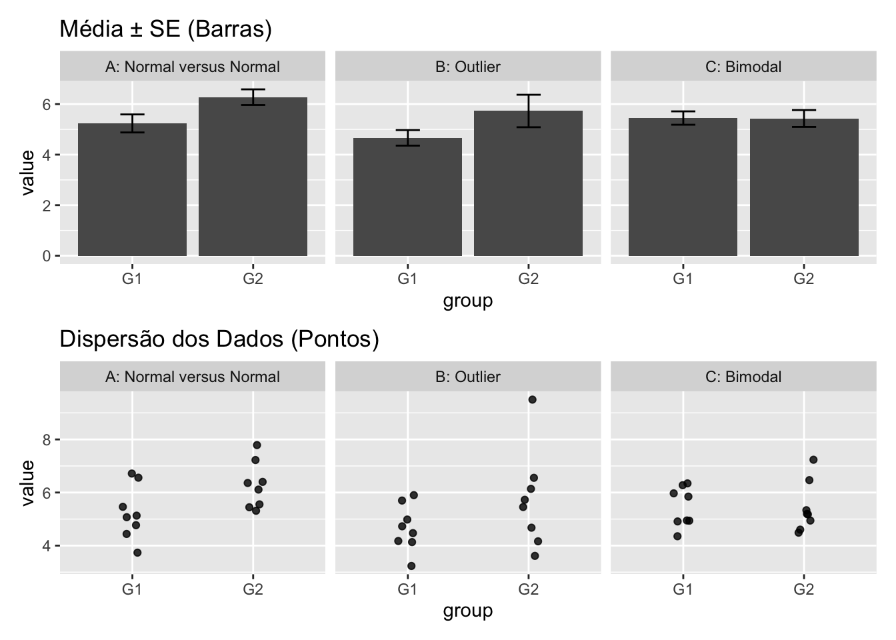
Figura 20.3: Exemplos de gráficos com barras de erro e dados brutos em diferentes cenários.
Os pacotes ggplot2199, plotly241 e corrplot242 fornecem diversas funções para construção de gráficos tais como ggplot, plot_ly e corrplot respectivamente.
20.2.5 Quais são os principais obstáculos para bons gráficos?
- Dificuldade técnica, negligência no ensino tradicional e o foco em “beleza” sem clareza podem levar a gráficos ruins, mesmo quando bem intencionados.239
20.3 Tipos de gráficos
20.3.1 Quais são os tipos de gráficos para variáveis categóricas?
- Gráfico de barras: Mais usado para comparar frequências absolutas ou relativas entre categorias.REF?
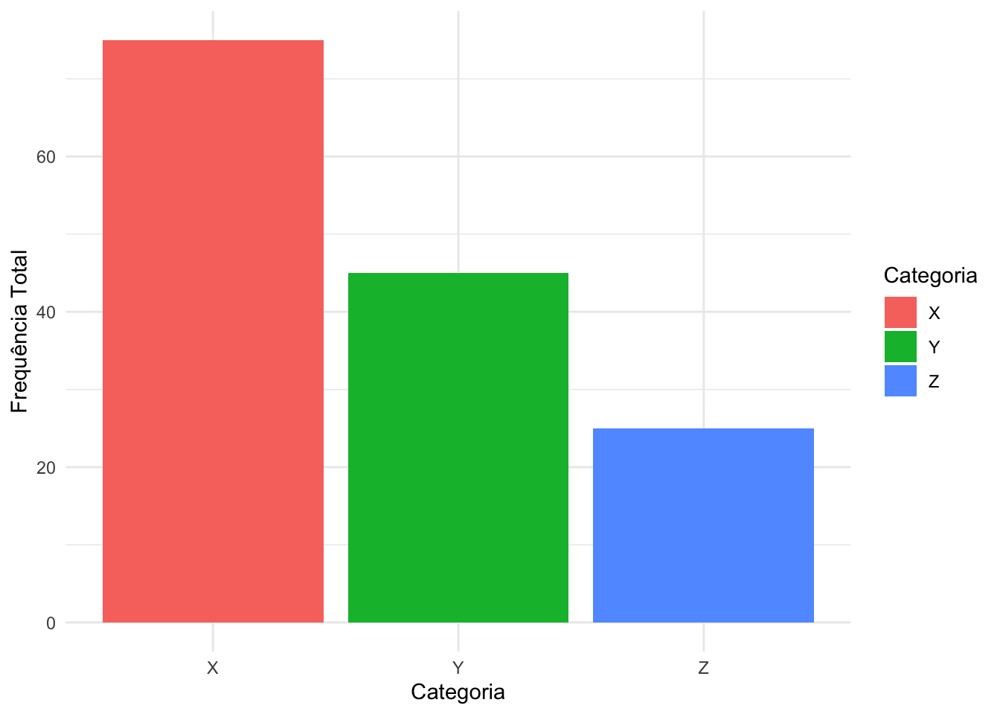
Figura 20.4: Gráfico de barras simples representando frequências por categoria.
- Gráfico de barras empilhadas: Útil para comparar proporções entre grupos em mais de uma variável categórica.REF?
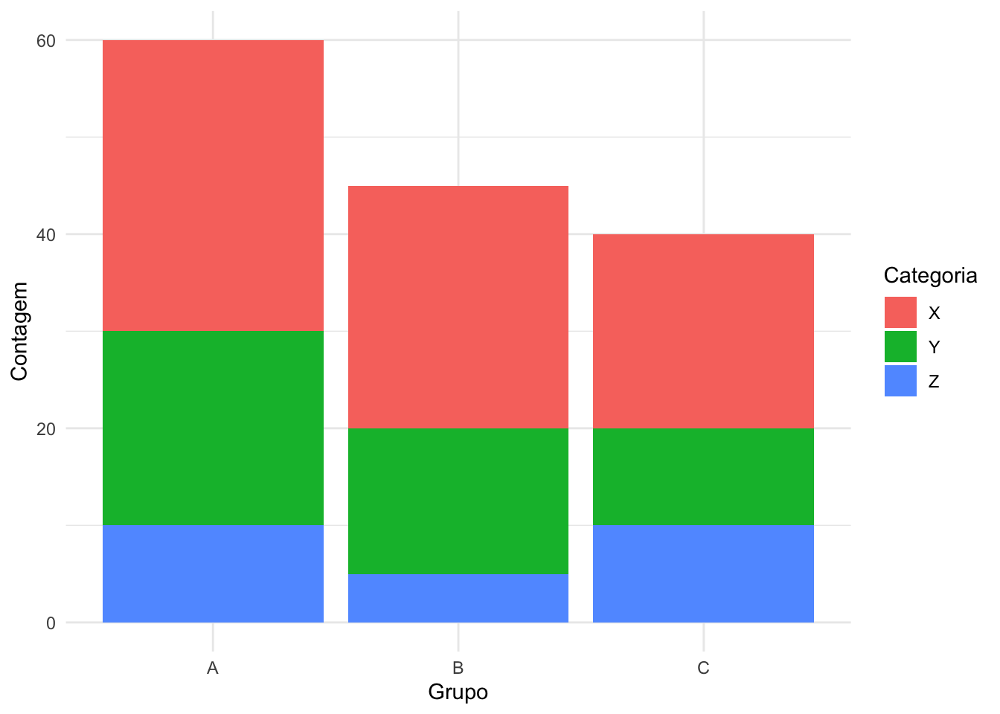
Figura 20.5: Gráfico de barras empilhadas representando frequências por categoria.
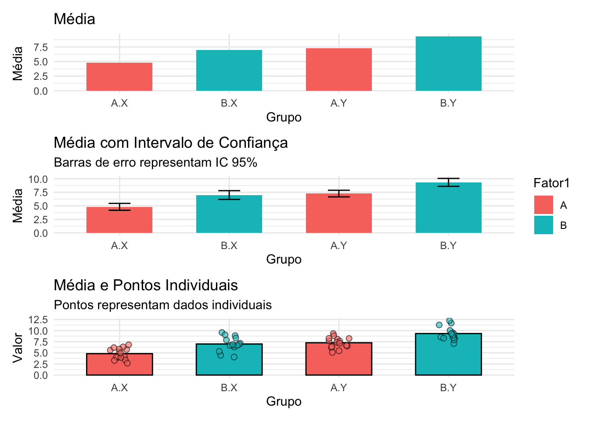
Figura 20.6: Gráficos de barras represetando médias, barras de erro e dados individuais.
20.3.2 Quais são os tipos de gráficos para variáveis numéricas?
- Histograma: Distribuição de frequência de uma variável contínua. Mostra a forma da distribuição (simétrica, assimétrica, bimodal).REF?
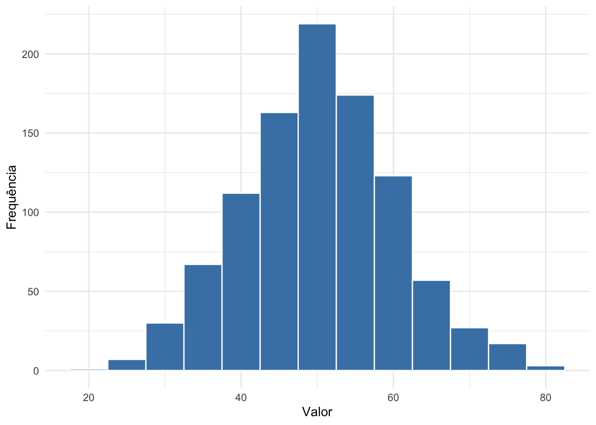
Figura 20.7: Histograma.
- Gráfico de densidade: Similar ao histograma, mas mais suave. Útil para avaliar a distribuição.REF?
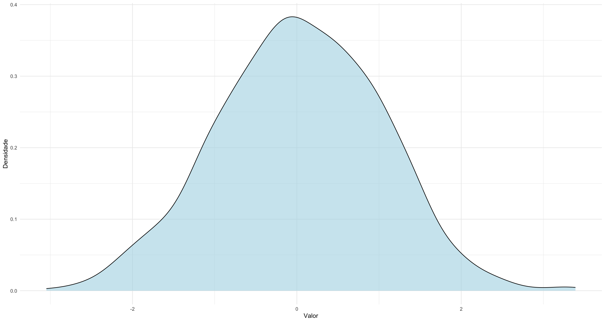
Figura 20.8: Gráfico de densidade
- Diagrama de caixa (boxplot): Resume mediana, quartis e valores extremos. Excelente para comparar grupos.REF?
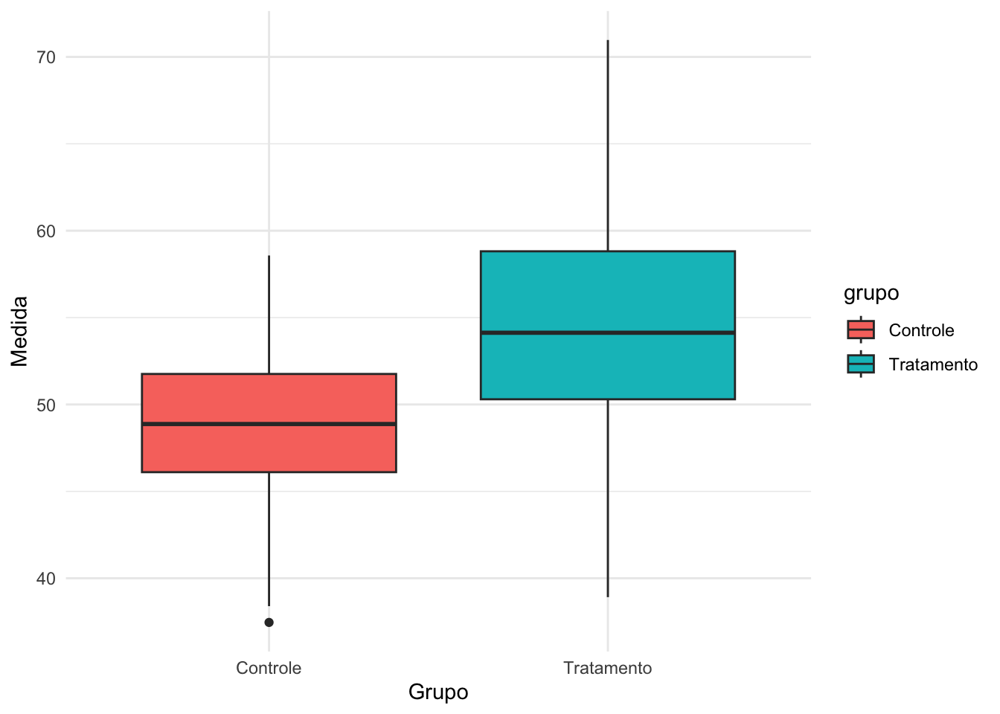
Figura 20.9: Boxplot por grupo.
- Gráfico de violino: Combina boxplot e densidade, mostrando a distribuição da variável. Útil para comparar grupos.REF?
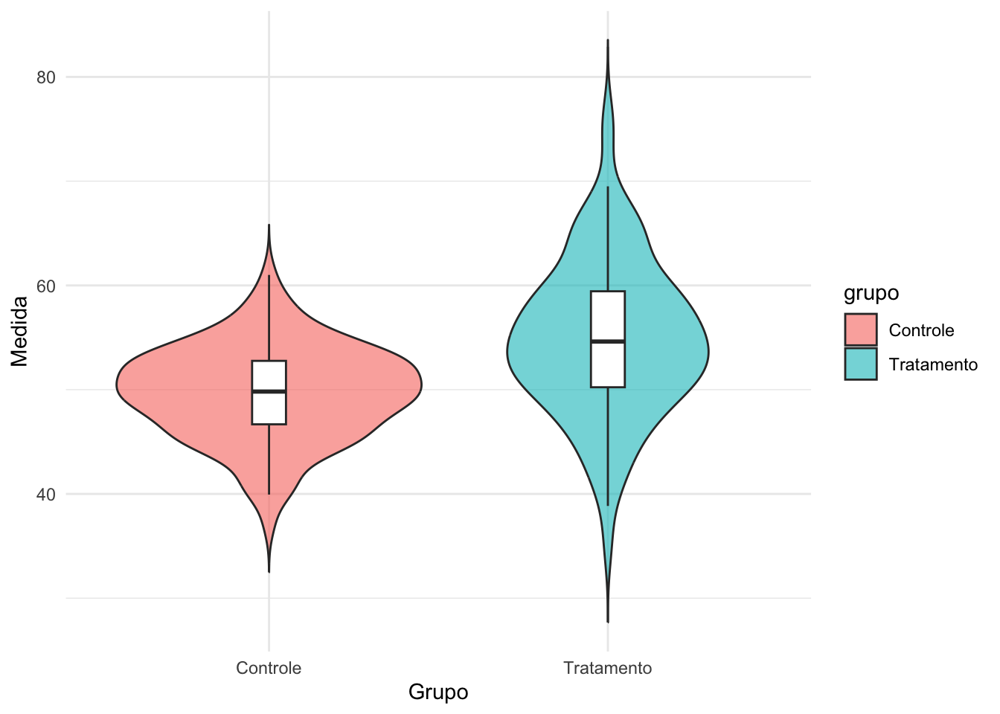
Figura 20.10: Violin plot por grupo.
- Gráfico de pontos (dot plot): Mostra cada valor individualmente, útil para pequenas amostras e para visualizar a distribuição.REF?
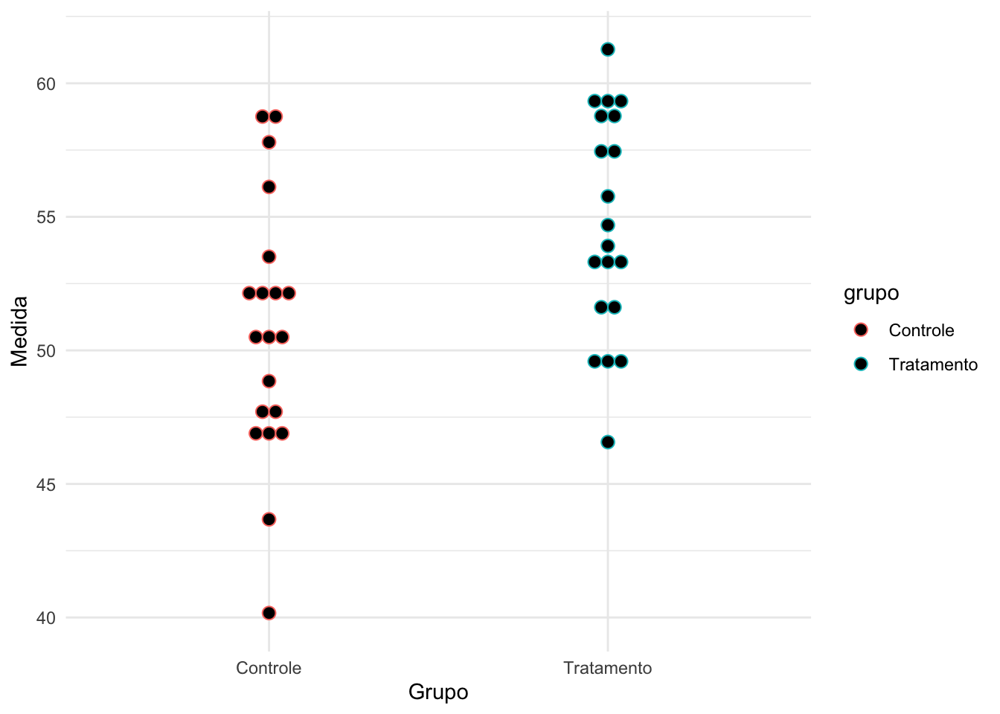
Figura 20.11: Gráfico de pontos.
20.3.3 Quais são os tipos de gráficos para relações entre variáveis?
- Gráfico de dispersão (scatter plot): Mostra a relação entre duas variáveis quantitativas. Ideal para investigar correlações.REF?
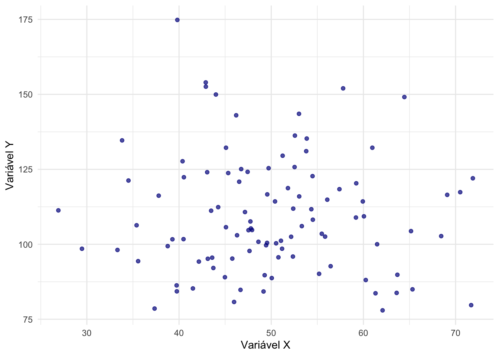
Figura 20.12: Gráfico de dispersão representando a relação entre duas variáveis.
- Gráfico de bolhas (bubble chart): Expande o gráfico de dispersão adicionando uma terceira variável (tamanho da bolha).REF?
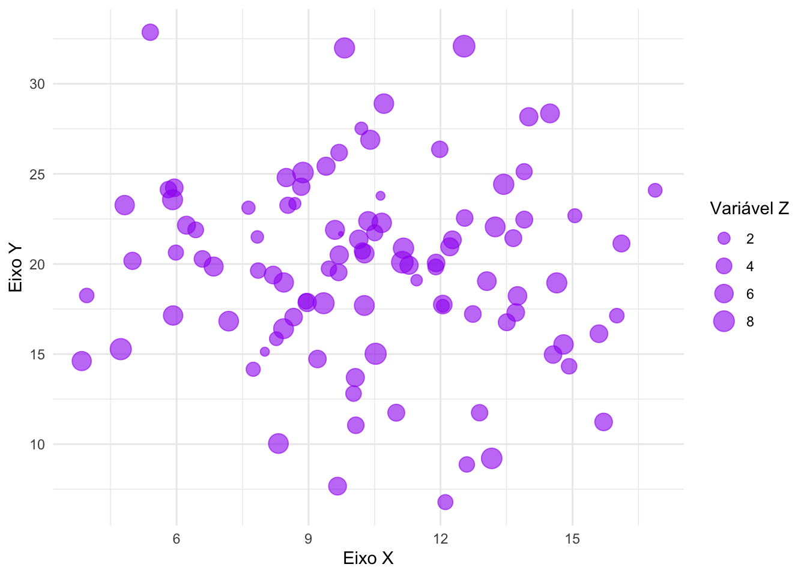
Figura 20.13: Gráfico de bolhas representando a relação entre três variáveis.
- Gráfico Sankey: Visualiza fluxos entre categorias em diferentes etapas ou grupos. Útil para mostrar proporções e transições.243
Figura 20.14: Sankey plot representando fluxos entre categorias.
- Gráfico de categorias paralelas (parcats): Mostra relações entre múltiplas variáveis categóricas em paralelo. Útil para visualizar fluxos e proporções.REF?
Figura 20.15: Gráfico de categorias paralelas (parcats) representando transições entre categorias ao longo do tempo.
- Gráfico de pares (pairs plot): Mostra relações entre múltiplas variáveis quantitativas por meio de uma matriz de dispersão.REF?
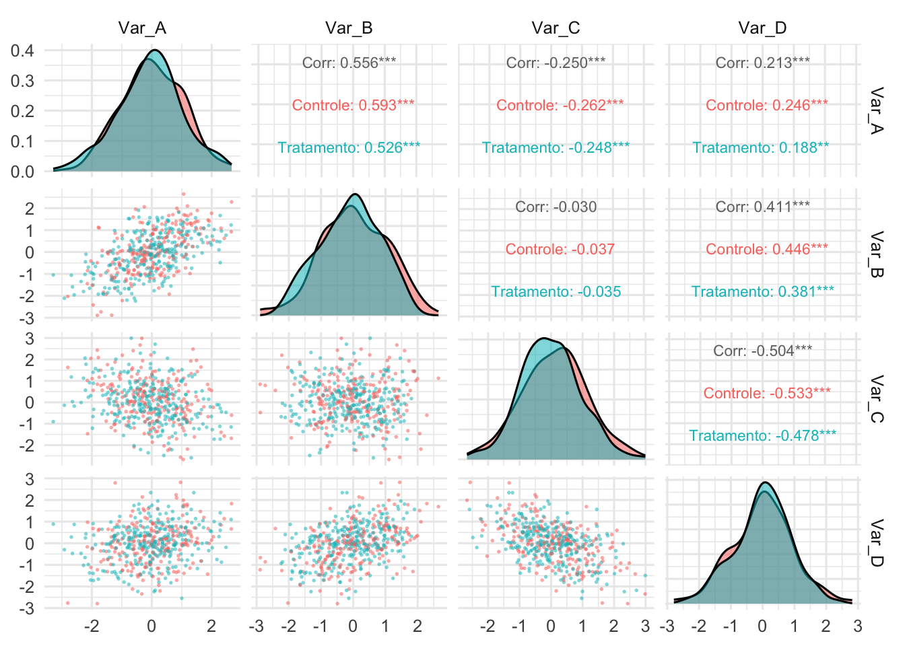
Figura 20.16: Gráfico de pares representando correlações entre múltiplas variáveis.
20.3.4 Quais são os tipos de gráficos para dados longitudinais?
- Gráfico de spaghetti: Mostra trajetórias individuais ao longo do tempo, útil para dados longitudinais de variáveis contínuas.243,244
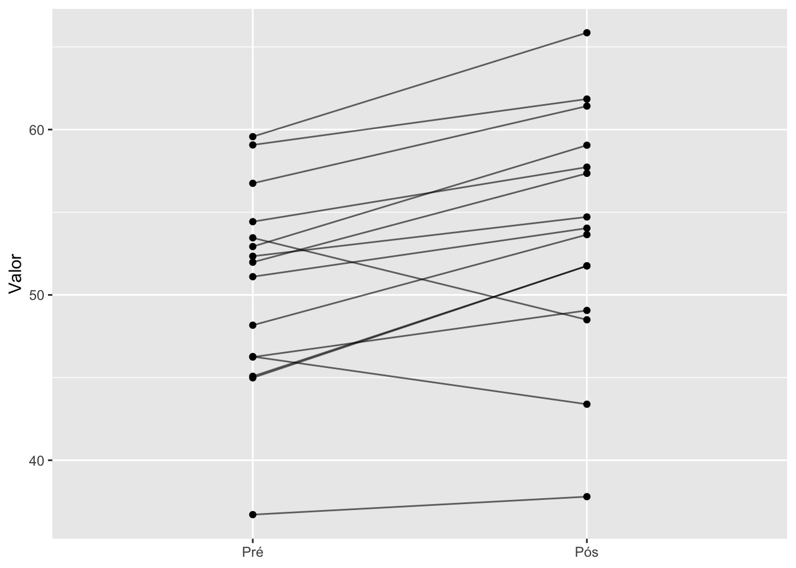
Figura 20.17: Gráfico spaghetti representando dados longitudinais.
- Gráfico de lasagna: Mostra trajetórias individuais ao longo do tempo, útil para dados longitudinais de variáveis categóricas.243,244
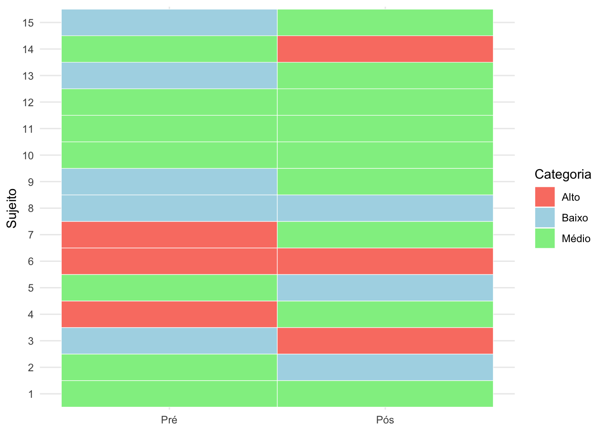
Figura 20.18: Gráfico de lasanha representando dados longitudinais categóricos.
- Gráfico nadador (swimmer plot): Representa a duração do acompanhamento individual de cada participante ao longo do tempo, destacando eventos clínicos importantes e pacientes ainda em seguimento.REF?
Code
# reprodutibilidade
set.seed(123)
# 1. Criando dados simulados
n_patients <- 25
df <- data.frame(
patient = paste0("P", sprintf("%02d", 1:n_patients)),
# início do acompanhamento
start_day = sample(0:40, n_patients, replace = TRUE),
# duração total
duration = sample(20:140, n_patients, replace = TRUE),
# evento intermediário
event_day = sample(10:120, n_patients, replace = TRUE),
# paciente ainda em seguimento?
ongoing = sample(c(TRUE, FALSE), n_patients, replace = TRUE)
)
# fim do acompanhamento
df$end_day <- df$start_day + df$duration
# ajustar evento para ficar dentro da linha
df$event_day <- pmin(
df$start_day + df$event_day,
df$end_day - 5
)
# ordenar pacientes pela duração
df <- df %>%
dplyr::arrange(desc(duration)) %>%
dplyr::mutate(patient = factor(patient, levels = patient))
# 2. Construção do Swimmer Plot
p <- ggplot2::ggplot(df) +
# linha principal de cada paciente
ggplot2::geom_segment(
ggplot2::aes(
x = start_day,
xend = end_day,
y = patient,
yend = patient
),
linewidth = 1
) +
# ponto do evento clínico
ggplot2::geom_point(
ggplot2::aes(
x = event_day,
y = patient
),
shape = 18,
size = 3
) +
# seta para pacientes ainda em seguimento
ggplot2::geom_segment(
data = subset(df, ongoing == TRUE),
ggplot2::aes(
x = end_day - 5,
xend = end_day,
y = patient,
yend = patient
),
arrow = ggplot2::arrow(length = grid::unit(0.15, "cm")),
linewidth = 1
) +
# tema
ggplot2::theme_bw(base_size = 12) +
ggplot2::labs(
x = "Dias após início do tratamento",
y = "Paciente"
) +
ggplot2::theme(
panel.grid.major.y = ggplot2::element_blank(),
panel.grid.minor = ggplot2::element_blank()
)
# 3. Exibir gráfico
print(p)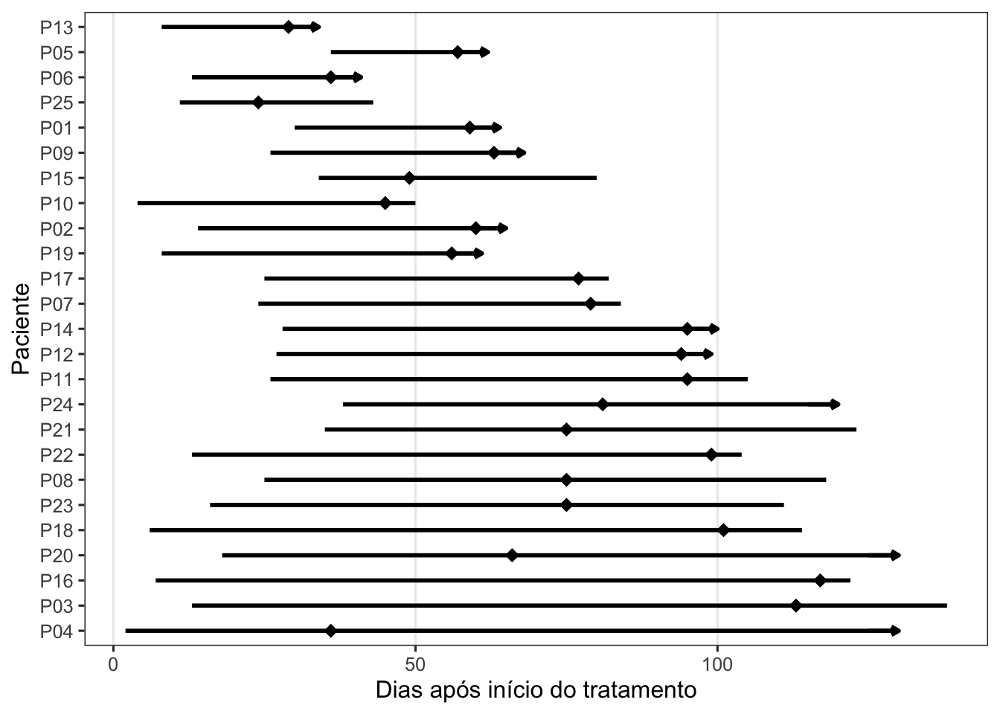
20.3.5 Quais são os tipos de gráficos para séries temporais?
- Gráfico de linhas: Mostra a evolução de uma variável ao longo do tempo, com pontos conectados por linhas.REF?
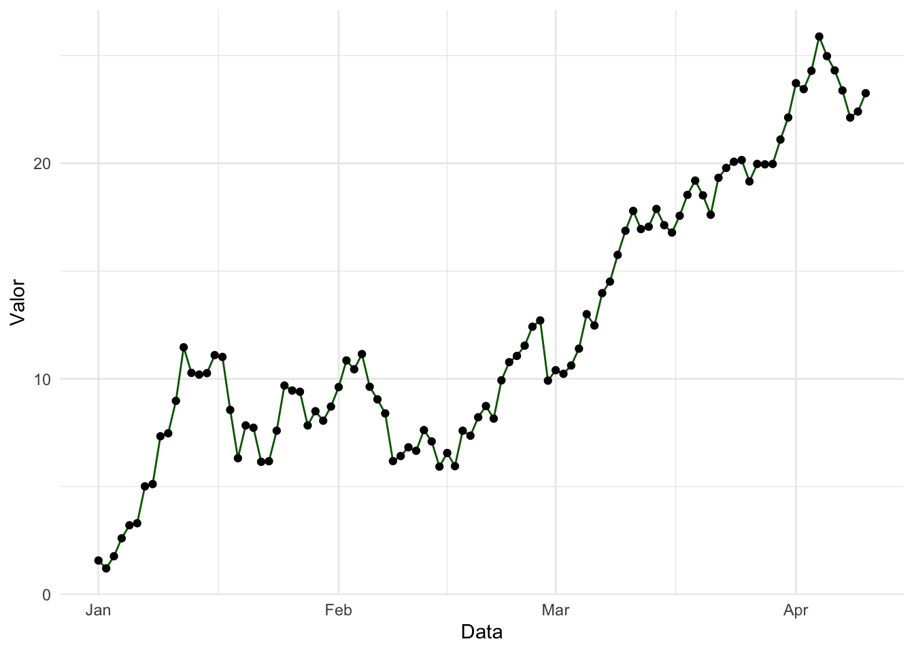
Figura 20.19: Gráfico de linha representando uma série temporal.
20.3.6 Quais são os tipos de gráficos para avaliação de resposta longitudinal?
- Waterfall plot: Representa a melhor variação percentual individual em relação ao baseline, geralmente ordenada do pior ao melhor respondedor. Pode mascarar a dinâmica temporal e induzir interpretações equivocadas quando usado isoladamente.245
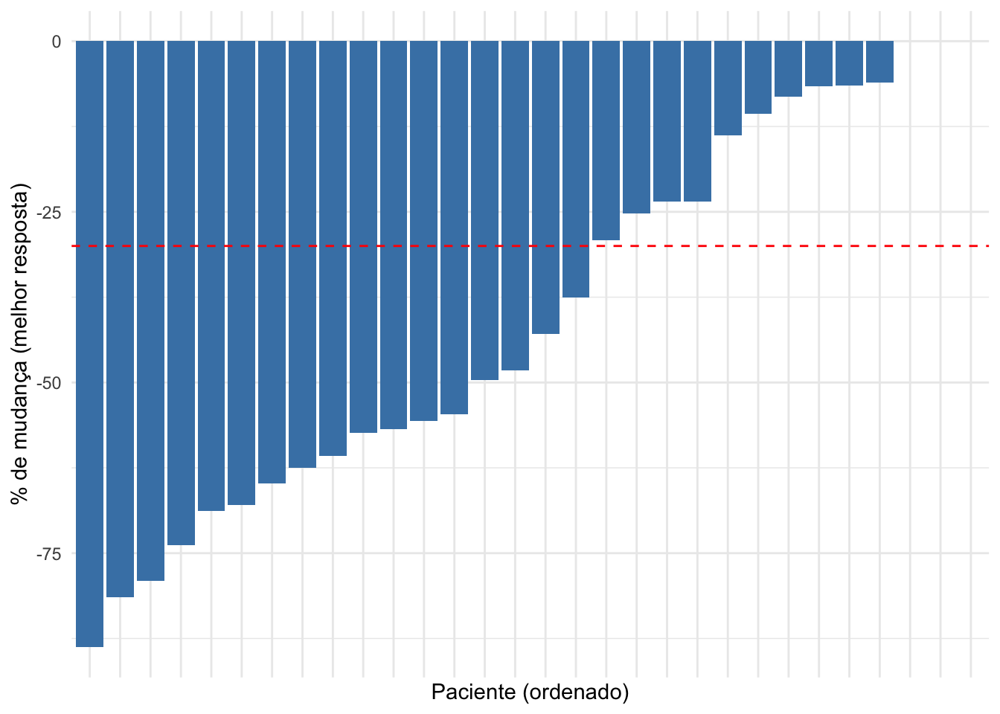
Figura 20.20: Gráfico waterfall representando a melhor variação percentual em relação ao baseline para cada paciente.
- Spider plot: Mostra a variação percentual de uma variável ao longo do tempo para cada indivíduo, permitindo visualizar a trajetória longitudinal da resposta. Ainda assim, o uso de percentual de mudança apresenta limitações estatísticas, incluindo assimetria e dependência do valor basal.245
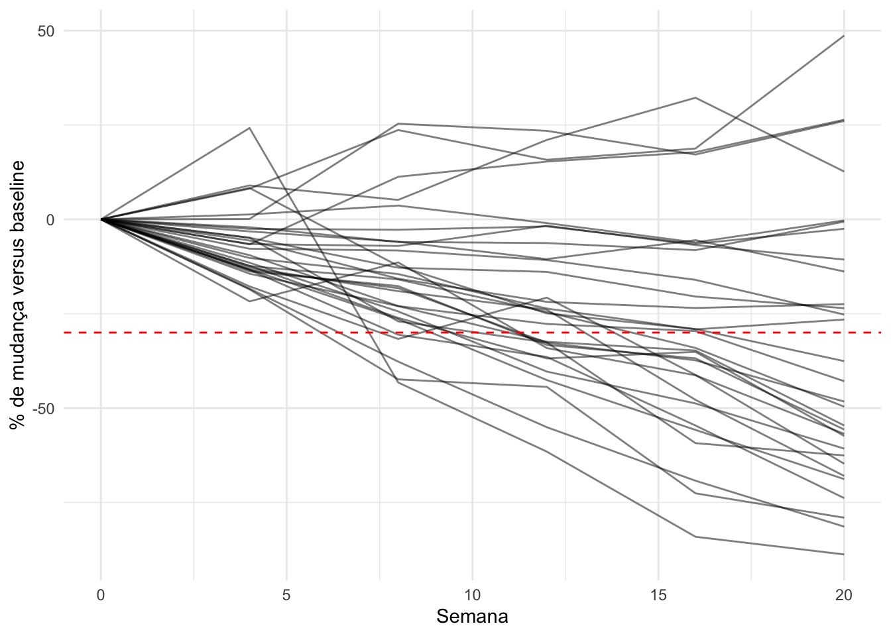
Figura 20.21: Gráfico spider representando a variação percentual do SLD ao longo do tempo para cada paciente.
20.3.7 Quais são os tipos de gráficos para dados multivariados?
- Gráfico de dispersão: Representa a relação entre duas variáveis, com pontos e uma linha de tendência.REF?
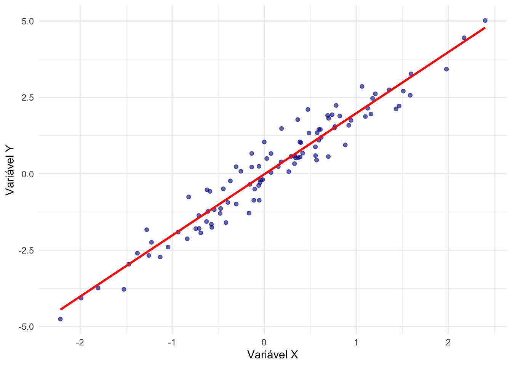
Figura 20.22: Gráfico de correlação entre duas variáveis com linha de tendência.
- Gráfico de matriz de dispersão: Mostra relações entre múltiplas variáveis quantitativas, útil para identificar padrões.REF?
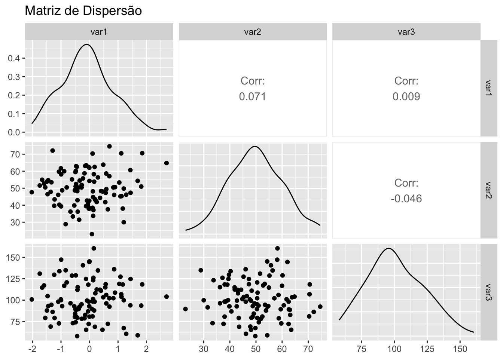
Figura 20.23: Matriz de dispersão representando relações entre múltiplas variáveis.
- Gráfico de calor (heatmap): Representa dados em uma matriz, com cores indicando intensidade ou frequência.REF?
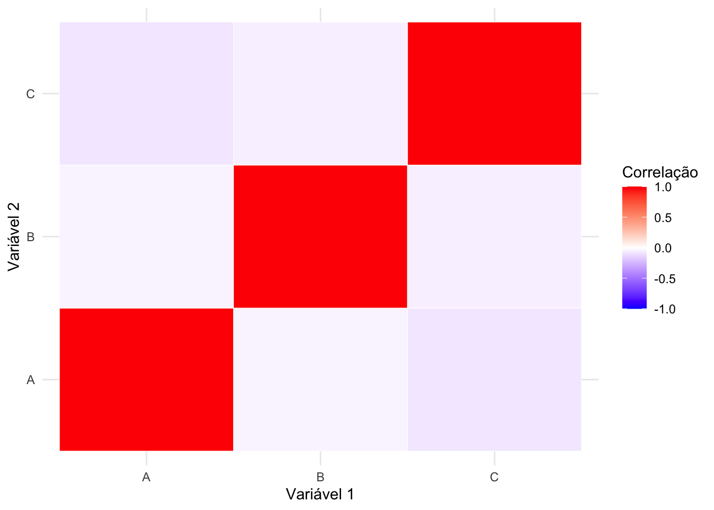
Figura 20.24: Mapa de calor da correlação entre variáveis.
- Gráfico de radar (ou gráfico de aranha): Representa várias variáveis em um único gráfico, útil para comparar perfis.REF?
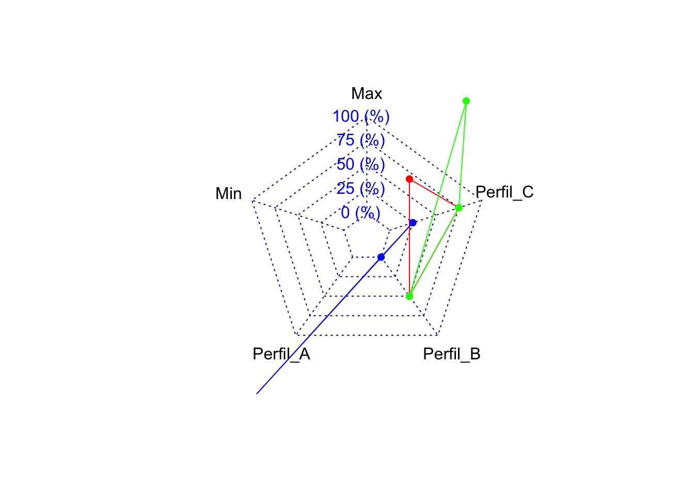
Figura 20.25: Gráfico radar representando múltiplas variáveis.
20.3.8 Quais são as melhores práticas na elaboração de gráficos?
O tamanho da amostra total e subgrupos, se houver, deve estar descrito na figura ou na sua legenda.240
Para análise inferencial de figuras, as barras de erro representadas por erro-padrão ou intervalo de confiança no nível de significância \(\alpha\) pré-estabelecido são preferíveis à amplitude ou desvio-padrão.208,240
Evite gráficos de barra e mostre a distribuição dos dados sempre que possível.235
Exiba os pontos de dados em boxplots.235
Use jitter simétrico em gráficos de pontos para permitir a visualização de todos os dados.235
Prefira palhetas de cor adaptadas para daltônicos.235
Uma boa legenda torna a figura autossuficiente: descreva amostra (n), geometrias, métricas de incerteza, escalas/unidades e mensagem principal. Se houver modelo, indique fórmula/ajustes em nota.237
Evite gráficos de barras com médias para variáveis contínuas; prefira pontos/box/violino e, em amostras pequenas, exiba todos os dados.235
Checklist: (1) Mensagem está explícita? (2) Geometria adequada e dados visíveis? (3) Incerteza correta e rotulada? (4) Cores informativas e acessíveis? (5) Escalas comparáveis? (6) Legenda autossuficiente? (7) Diferença clara entre dados e modelos? (8) Arquivo exportado na resolução/tamanho exigidos?237
O pacote ggsci246 fornece palhetas de cores tais como pal_lancet, pal_nejm e pal_npg inspiradas em publicações científicas para uso em gráficos.
O pacote grDevices198 fornece a função dev.new para controlar diversos aspectos do gráfico, tais como tamanho e resolução.
20.4 Fluxogramas
20.4.1 O que é um fluxograma?
Fluxogramas são representações visuais que organizam etapas, decisões, relações ou processos por meio de símbolos e setas.248
Fluxogramas auxiliam na compreensão de sequências de eventos e na comunicação de conceitos complexos de forma clara e rápida, sendo amplamente utilizados em ensino, pesquisa científica, apresentações e descrição de métodos experimentais.248
Fluxogramas não são utilizados apenas para representar processos. Em muitos contextos, também funcionam como ferramentas de planejamento, documentação, comunicação e coordenação entre diferentes participantes de um projeto.249
Todo fluxograma representa uma simplificação da realidade. Seu objetivo não é reproduzir todos os detalhes de um processo, mas destacar os elementos mais importantes para compreensão, análise ou comunicação.249
Historicamente, os fluxogramas desempenharam não apenas um papel técnico, mas também organizacional, servindo como instrumentos de comunicação entre diferentes participantes do desenvolvimento de sistemas.249
20.4.2 Por que utilizar fluxogramas em artigos científicos?
Fluxogramas permitem resumir métodos, processos experimentais e fluxos de participantes de forma mais eficiente do que descrições exclusivamente textuais.248
Diagramas bem construídos podem melhorar a aprendizagem, a retenção de informações e a comunicação entre pesquisadores de diferentes áreas e idiomas.248
Em apresentações científicas, fluxogramas ajudam o público a acompanhar processos complexos e favorecem a compreensão das relações entre etapas de um estudo.248
20.4.3 Quando utilizar fluxogramas?
Descrição de procedimentos laboratoriais.248
Protocolos experimentais.248
Sequências lineares de etapas.248
Fluxo de participantes em estudos clínicos.248
Processos decisórios.248
20.4.4 Quais são os elementos de um fluxograma?
Fluxogramas podem incluir elementos textuais e gráficos.248
Título: deve aparecer em posição de destaque e informar claramente a ideia principal do fluxograma.248
Legenda da figura: explica o objetivo geral do diagrama, descreve elementos importantes e define abreviações quando necessário.248
Rótulos identificadores: nomeiam componentes, etapas ou objetos representados.248
Rótulos explicativos: descrevem o que está acontecendo em cada etapa do processo.248
Marcadores de tempo: podem indicar a sequência temporal dos eventos quando o fluxograma representa processos cronológicos.248
Setas: representam direção, sequência de eventos, fluxo de informação ou relações entre etapas.248
Fluxos divergentes: indicam ramificações, caminhos alternativos ou eventos simultâneos.248
Ciclos: são úteis para representar processos repetitivos ou fenômenos cíclicos.248
Cores: podem destacar relações entre elementos, diferentes categorias ou estágios de um processo. O uso deve ser consistente ao longo da figura.248
Símbolos e ilustrações: ajudam a identificar rapidamente objetos, estruturas ou entidades envolvidas no processo.248
Ampliação ou redução de escala (zoom in e zoom out): permitem representar relações entre estruturas em diferentes níveis de detalhe.248
20.4.5 Quais são os princípios de um fluxograma?
O fluxo de leitura deve seguir uma direção intuitiva, preferencialmente de cima para baixo ou da esquerda para a direita.248
Elementos gráficos semelhantes devem representar conceitos semelhantes ao longo de toda a figura.248
Cores, setas, símbolos e legendas devem ser utilizados de forma consistente para facilitar a interpretação.248
Um fluxograma deve conter apenas as informações essenciais, evitando excesso de detalhes que possam prejudicar a compreensão.248
Títulos, legendas e rótulos explicativos ajudam o leitor a compreender rapidamente o significado da figura.248
Figura 20.26: Fluxograma baseado no Preferred Reporting Items for Systematic reviews and Meta-Analyses (PRISMA).
O pacote PRISMA2020250 fornece a função PRISMA_flowdiagram para elaboração do fluxograma de revisões sistemáticas no formato padrão.
20.4.6 Como construir fluxogramas claros e eficientes?
Utilize a mesma convenção gráfica para representar o mesmo conceito em toda a figura.248
Evite excesso de elementos visuais que possam gerar sobrecarga cognitiva.248
Garanta que o sentido de leitura seja intuitivo e claramente indicado pelas setas ou pela disposição dos elementos.248
Explique abreviações, símbolos e cores na legenda sempre que necessário.248
Priorize clareza e compreensão em vez de ornamentação visual.248
Evite representar detalhes desnecessários. Um fluxograma excessivamente complexo pode comprometer sua principal função: facilitar a compreensão do processo representado.249
Ferreira, Arthur de Sá. Ciência com R: Perguntas e respostas para pesquisadores e analistas de dados. Rio de Janeiro: 1a edição,